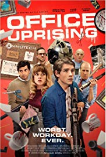

TITLE
Diese bescheuerte Herz r
GENRE
Comedy
RELEASE DATE
2017
DESCRIPTION
Lenny's only occupation is endless parties with friends.
He was used to the fact that his father paid for every whim. In the same city lives with
him 15-year-old David, who spends almost all his time at home. David has a congenital heart disease
and doctors' forecasts are not very comforting. Lenny's father, tired of his son's idleness,
entrusts David with that. Suddenly, these two become indispensable for each other.
Lenny helps the guy to feel the taste for life and realize his dreams, and David, in turn,
gives him the opportunity to feel responsible for his life and the lives of those around him.

TITLE
Office uprising
GENRE
Horror,Comedy
RELEASE DATE
2018
DESCRIPTION
The head of a large corporation, dreaming of the inhuman working capacity
of its managers, gave them a secret energy drink. However, the boss did not expect
a side effect - the subordinates became hyper-aggressive. And only one dolt, as usual being late for work,
was left without a portion of the power engineer. Now he has to go through real office lawlessness ...

TITLE
Gravity
GENRE
Fantastic
RELEASE DATE
2013
DESCRIPTION
A group of astronauts is wasting days on the space station. Once, when the captain
and his colleague perform the task in open space, the wreckage of an exploding satellite kills the entire crew.